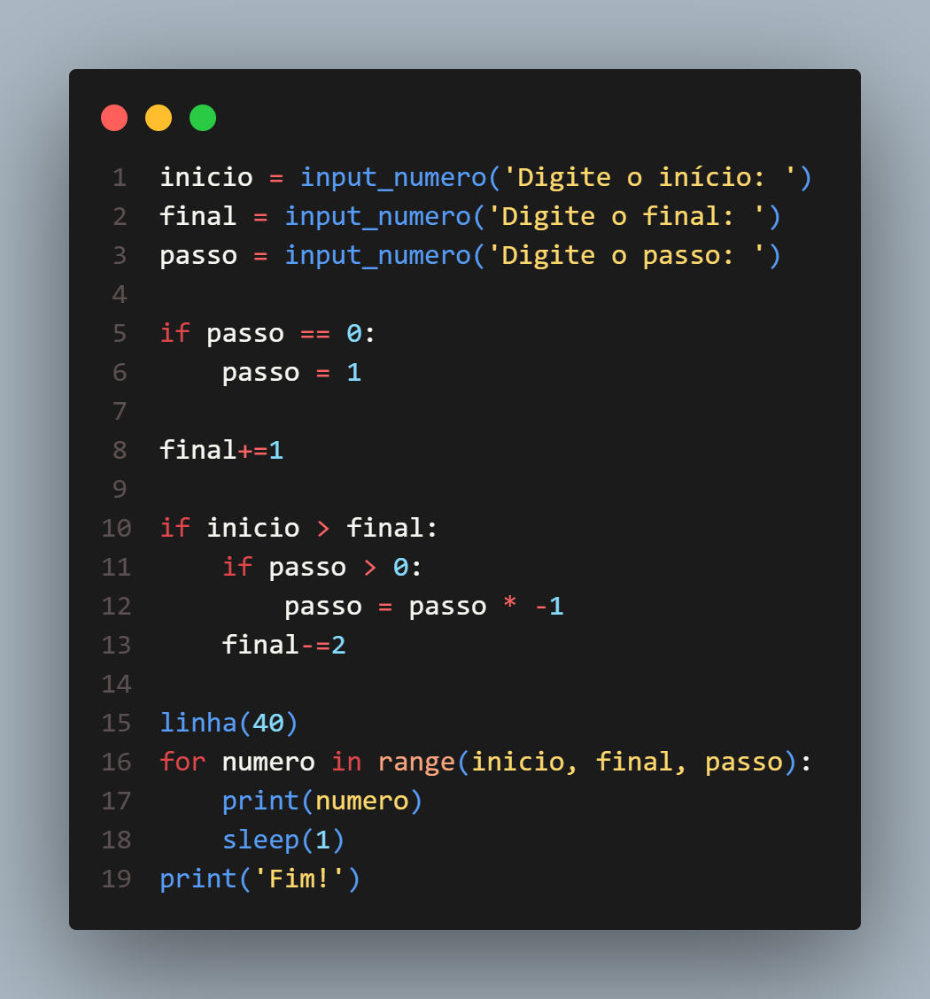
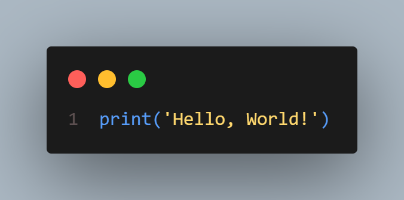

Como programas e aplicativos facilitam o dia a dia
Os programas de computador e aplicativos estão presentes em várias atividades do nosso cotidiano e ajudam a realizar tarefas de maneira mais rápida, prática e organizada.
Eles podem ser usados para estudar, trabalhar, se comunicar, organizar compromissos, fazer cálculos, pesquisar informações e até controlar aparelhos eletrônicos. Por exemplo, aplicativos de mapas ajudam a encontrar caminhos, aplicativos de calendário organizam compromissos e programas de edição permitem criar documentos, apresentações e imagens.
Dessa forma, a tecnologia facilita diversas tarefas, economizando tempo e tornando atividades que poderiam ser complicadas muito mais simples.
Pequeno código funcional

Python: recursos necessários para executar um programa
Para executar um programa desenvolvido em Python, é necessário ter um computador ou dispositivo compatível e o software necessário para interpretar o código.
Requisitos de hardware
- Processador: qualquer processador moderno de entrada é suficiente para programas simples.
- Memória RAM: 2 GB ou mais é suficiente para programas básicos.
- Armazenamento: alguns centenas de MB livres para instalar o Python e seus arquivos.
- Teclado e monitor: necessários para programar e utilizar programas com interface no computador.
Requisitos de software
- Sistema operacional: Windows, Linux ou macOS.
- Python: instalado no computador para interpretar e executar os programas.
- Editor de código ou IDE: como o VS Code, IDLE ou outro editor compatível, para escrever e editar o código.
Com esses recursos, já é possível criar e executar programas simples em Python. Para programas mais complexos, como jogos ou aplicações que utilizam inteligência artificial, podem ser necessários recursos de hardware mais avançados.
Código que mostra "Hello, World!"

O que é Software Livre?
Software livre é um programa que dá aos usuários liberdade para executar, estudar, modificar e compartilhar o software. Isso é possível porque seu código-fonte está disponível de acordo com a licença do programa.
Isso não significa necessariamente que o software seja gratuito. A principal característica do software livre é a liberdade de usar, estudar, modificar e distribuir, e não simplesmente não pagar pelo programa.
Exemplos de software livre
- 🐧 Linux — sistema operacional de código aberto e desenvolvido colaborativamente.
- 🦊 Mozilla Firefox — navegador de internet desenvolvido como software livre e de código aberto.
- 🖥️ LibreOffice — conjunto de programas para criar textos, apresentações e planilhas.
- 🎨 GIMP — programa de edição de imagens
- 🖥️ VLC — reprodutor de vídeos e outros arquivos de mídia.
O software livre é importante porque permite que pessoas estudem como os programas funcionam, contribuam para seu desenvolvimento e criem novas versões ou melhorias de acordo com as regras de suas licenças.
Licenciamento de programas e pirataria
O licenciamento de software define as regras que determinam como um programa pode ser usado, copiado, modificado e distribuído. Existem diferentes tipos de licenças.
📜 Tipos de licenciamento
- Licença proprietária: o programa pertence a uma empresa ou desenvolvedor e seu uso é limitado pelas condições estabelecidas pelo proprietário. Normalmente, o código-fonte não é disponibilizado. Exemplo: Microsoft Windows.
- Licença de software livre: permite que os usuários tenham determinadas liberdades para usar, estudar, modificar e compartilhar o programa, de acordo com a licença. Exemplo: GNU/Linux.
- Licença de código aberto (open source): permite acesso ao código-fonte e possibilita sua análise e modificação conforme as regras da licença. Exemplos: Mozilla Firefox e muitos projetos de código aberto.
⚠️ O que é pirataria?
A pirataria de software acontece quando um programa é copiado, distribuído ou utilizado de maneira que viola os direitos e as condições estabelecidas pela licença.
Ela pode ser prejudicial porque pode causar prejuízos aos desenvolvedores, violar direitos autorais e aumentar os riscos de segurança. Programas obtidos de fontes não confiáveis também podem ser modificados e conter vírus ou outros tipos de malware.
Por isso, é importante utilizar programas de forma legal, respeitando suas licenças e dando preferência a fontes oficiais e confiáveis.
Funções em Python
As funções são blocos de código que realizam uma determinada tarefa. Python possui diversas funções prontas que podem ser utilizadas nos programas, facilitando o desenvolvimento e evitando que o programador precise escrever tudo do zero.
1. print()
A função print() exibe informações na tela.
2. input()
A função input() permite receber uma informação digitada pelo usuário.
3. len()
A função len() informa a quantidade de elementos de uma sequência, como caracteres de um texto.
4. type()
A função type() mostra qual é o tipo de um determinado dado.
5. int()
A função int() transforma um valor em um número inteiro, quando a conversão é possível.
🔎 Onde buscar referências?
As referências sobre Python podem ser encontradas principalmente na documentação oficial do Python, que explica as funções, comandos, bibliotecas e recursos da linguagem. Também é possível consultar livros, cursos e sites educacionais confiáveis.
Uma das principais fontes é a documentação oficial do Python: docs.python.org.
Repositórios de código
Um repositório de código é um local onde os arquivos e códigos de um projeto podem ser armazenados e organizados. Repositórios também permitem acompanhar as alterações feitas no código, recuperar versões anteriores e facilitar o trabalho em equipe.
1. GitHub
O GitHub é uma das plataformas de desenvolvimento de software mais conhecidas. Ele permite armazenar projetos, controlar versões do código e colaborar com outros programadores por meio de recursos como branches e pull requests.
2. GitLab
O GitLab é uma plataforma que permite armazenar e gerenciar repositórios Git. Além do controle de versões, oferece ferramentas para revisão de código, testes e integração e entrega contínuas (CI/CD).
3. Bitbucket
O Bitbucket é uma plataforma de hospedagem de código baseada em Git, voltada principalmente para colaboração entre equipes. Ela possui recursos para controlar versões, revisar alterações e automatizar testes e processos de desenvolvimento.
⚡ Como eles agilizam a programação?
Os repositórios agilizam o desenvolvimento porque permitem que os programadores:
- Salvem diferentes versões do projeto;
- Trabalhem em equipe sem precisar enviar arquivos manualmente;
- Voltem para versões anteriores quando ocorrer algum problema;
- Organizem e acompanhem alterações no código;
- Compartilhem projetos com outros desenvolvedores;
- Revisem alterações antes de adicioná-las ao projeto principal;
- Automatizem testes e outras etapas do desenvolvimento.
Assim, plataformas como GitHub, GitLab e Bitbucket tornam o desenvolvimento de software mais organizado, seguro e colaborativo.
Como funciona uma empresa de jogos digitais
Uma empresa de jogos digitais é formada por profissionais de diferentes áreas que trabalham juntos para criar, lançar e manter jogos para computadores, celulares e consoles.
O desenvolvimento normalmente começa com uma ideia. A equipe define o tipo de jogo, seu público, as plataformas em que será lançado e suas principais características. Depois começa a fase de planejamento, na qual são definidos os objetivos, prazos, recursos e tarefas do projeto.
Durante o desenvolvimento, diferentes profissionais trabalham em conjunto:
- 🎮 Game designers: criam as regras, mecânicas e experiências do jogo.
- 💻 Programadores: desenvolvem o código responsável pelo funcionamento do jogo.
- 🎨 Artistas e designers: criam personagens, cenários, objetos e outros elementos visuais.
- 🎵 Profissionais de áudio: produzem músicas, efeitos sonoros e outros sons.
- 🧪 Testadores (QA): procuram erros e problemas para melhorar a qualidade do jogo.
- 📢 Marketing: ajuda a divulgar o jogo e alcançar o público.
Depois que uma versão do jogo está pronta, ela passa por testes para encontrar bugs e corrigir problemas. Após a conclusão, o jogo é lançado em plataformas como lojas digitais de computadores, celulares ou consoles.
O trabalho da empresa não termina com o lançamento. Muitos jogos recebem atualizações, correções, novos conteúdos e melhorias durante sua vida útil. A empresa também pode acompanhar opiniões dos jogadores para identificar problemas e decidir quais melhorias serão feitas.
Assim, uma empresa de jogos digitais funciona como uma equipe multidisciplinar, na qual profissionais de diferentes áreas trabalham juntos para transformar uma ideia em um jogo completo.
O que são emuladores?
Um emulador é um programa que permite que um computador ou outro dispositivo imite o funcionamento de outro sistema. Ele reproduz, por meio de software, características necessárias para executar programas ou jogos originalmente desenvolvidos para outra plataforma.
Por exemplo, um computador pode utilizar um emulador para executar um programa desenvolvido originalmente para um console ou para outro sistema operacional.
⚙️ Como funciona?
O emulador cria uma espécie de ambiente virtual que reproduz o funcionamento do sistema original. Ele interpreta as instruções do programa que está sendo executado e as adapta para o hardware e o sistema operacional do dispositivo atual.
Isso pode exigir bastante processamento, principalmente quando o sistema emulado é mais complexo.
🎮 Exemplos de emuladores
- Dolphin: emula jogos dos consoles Nintendo GameCube e Wii.
- PCSX2: emula o PlayStation 2.
- PPSSPP: emula o PlayStation Portable (PSP).
- DOSBox: permite executar muitos programas e jogos desenvolvidos para sistemas DOS.
🔧 Para que servem?
Os emuladores podem ser utilizados para:
- Estudar e pesquisar sistemas antigos;
- Preservar softwares e jogos antigos;
- Executar programas desenvolvidos para outra plataforma;
- Testar softwares em diferentes ambientes;
- Auxiliar desenvolvedores durante o desenvolvimento de programas.
Em resumo, um emulador permite que um dispositivo reproduza o comportamento de outro sistema, possibilitando executar determinados softwares que originalmente não foram desenvolvidos para ele.